戦国コレクション6 🆕
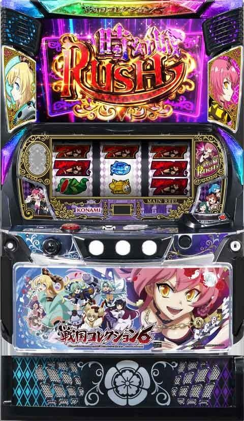
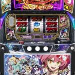
狙い目
【リセット狙い】
150Gから or 2周期0コレから
【ゲーム数天井狙い】
500Gから or 5周期0コレから
前回AT120枚以下後 300G or 3周期0コレから
上位後、最終決戦失敗後 0Gから
※120枚以下後は約50％で裏モードに移行？
※上位後、最終決戦失敗後は天国濃厚？「その他」→「履歴の見方」を要確認。
※上位ATが終わると最終決戦突入するため、上位AT後＝最終決戦失敗後となる。
【ゾーン狙い】
1周期目 100コレから当該周期消化まで
※1周期は222コレ以下、当選期待度40.2％のため
【裏モード狙い】
3種類ある。滞在濃厚としても単体不問で打てるか不明。かなりボーダーは下げれそう。
【示唆関連の押し引きについて】
天国濃厚 AT当選まで
通常B以上濃厚 AT当選まで？
【示唆確認する項目リスト】
※示唆が非常に多いため、ちょんぼりすた等を要確認。
※以下の示唆はAT当選までまたは周期到達まで打った方が良さそう
※以下の示唆以外にも次回天国濃厚などの示唆もあるため要確認。
コナミコマンド
早く小町と遊びましょ？（天国濃厚）、お勉強の時間です（2周期以内にAT当選）
た〜まらんぜよー！（モードB以上濃厚）、てんかたいへーい！（3周期以内にAT当選）
ミニキャラ通過演出
義元出現（モードB以上濃厚）、信長出現（天国濃厚）
三巫女会話演出
敵武将・めんどくさい（天国濃厚）、迷子2（シナリオ⑨以上濃厚）
鬼ヶ島チャレンジ中のセリフ等
もうトんじゃいそう♪（当該周期での当選＋次回天国濃厚）、あなた最高よ♪（シナリオ⑩以上濃厚）
いっしょにとぼー！（当該周期での当選＋次回天国濃厚）、おねえちゃんさいこー！（シナリオ⑩以上濃厚）
ステージチェンジ演出
黒ステチェン（当該周期で当選濃厚）
ステチェンまでのコレ数
50コレ（モードB以上濃厚）、30コレ（天国濃厚）
闇アリスのセリフ
セリフ1（モードB以上濃厚）、セリフ2（ATシナリオ⑫濃厚）
AT中の対戦相手
1セット目北条早雲（次回天国濃厚）、1セット目今川義元（次回モードB以上濃厚）、2セット目北条早雲（次回モードB以上濃厚）
家康のリアクション
歌う（当該周期での当選+次回天国濃厚）
【有利区間関連狙い】
不明
やめ時
AT終了後、続行する示唆が無ければやめ。
最終決戦敗北後は天国濃厚なため1周期目を要消化。
その他
履歴の見方（最終決戦失敗後）
「BB12Gは上位ATの信号」。20:48から21:52の連荘は上位AT突入している。
「BB6連の履歴は最終決戦失敗後」。19:40から20:30の連荘はBBが6連しているため→5戦突破、最終決戦失敗後となる
上位ATが終わると最終決戦突入するため、上位AT後＝最終決戦失敗後となる。
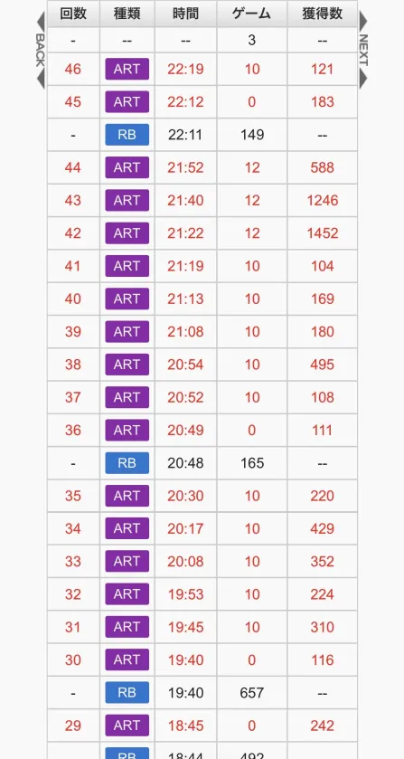
周期・通常時のモード
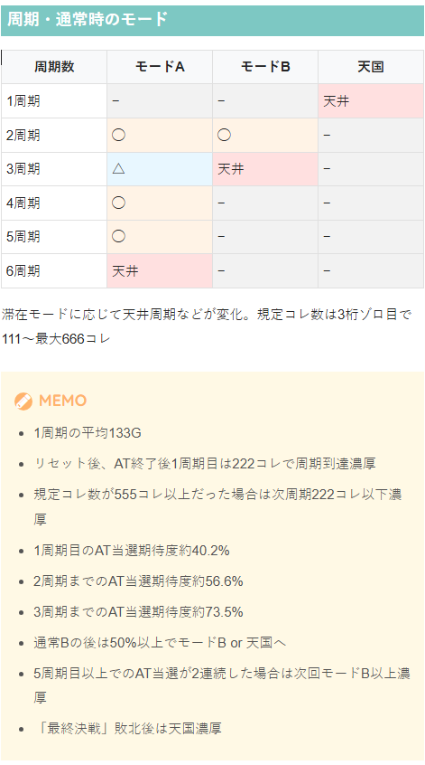
コナミコマンド示唆
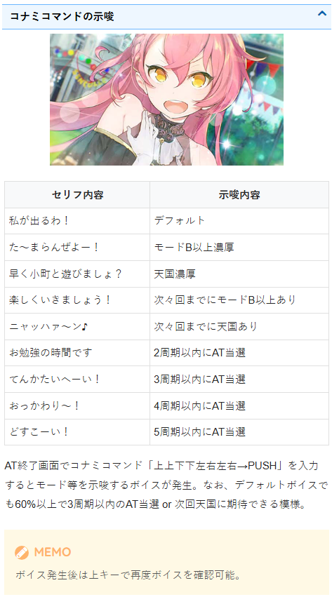
鬼ヶ島チャレンジ中のセリフ等
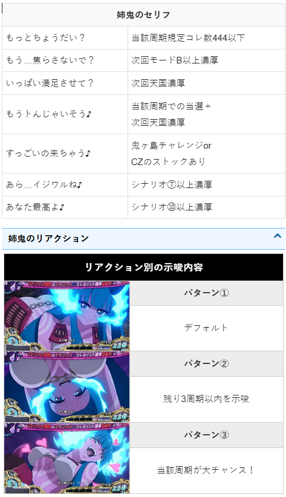
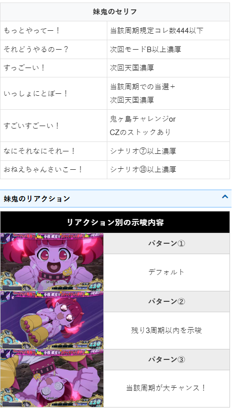
ミニキャラ通過演出、三巫女会話演出
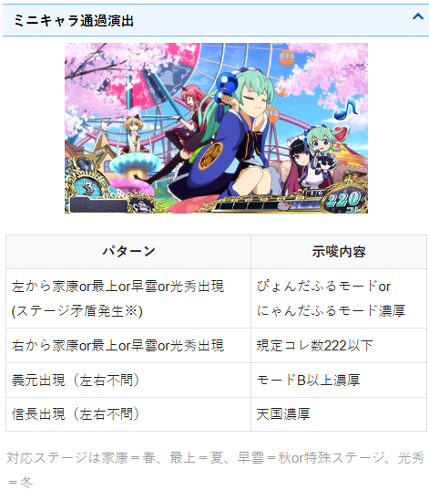
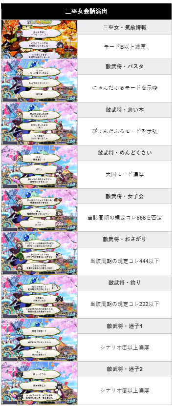
ステージチェンジ演出、ステチェンまでのコレ数
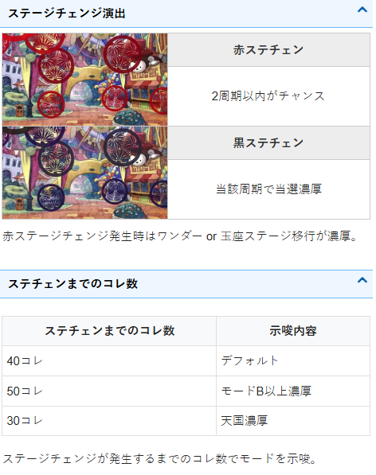
闇アリスのセリフ
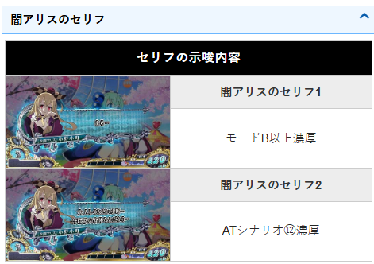
AT中の対戦相手
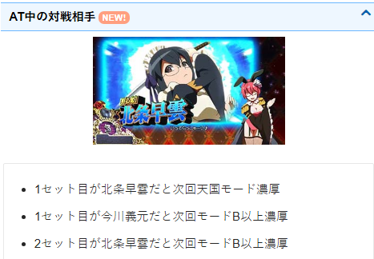
家康のリアクション
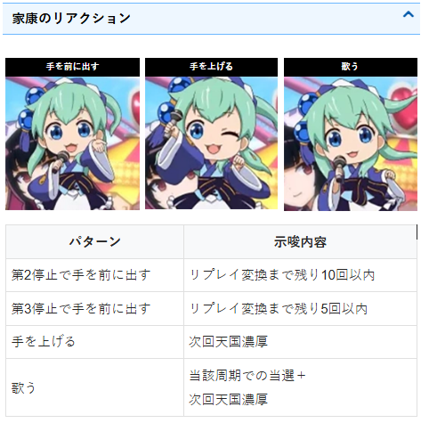
内部状態
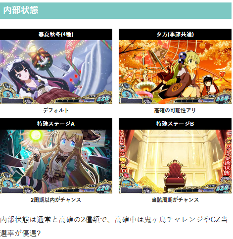
裏モード
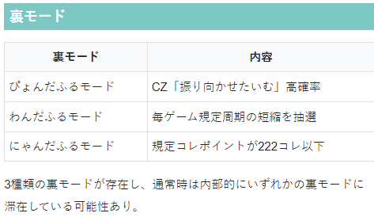
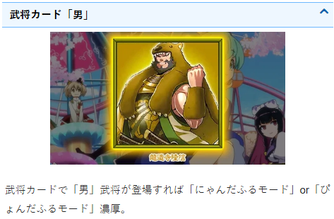
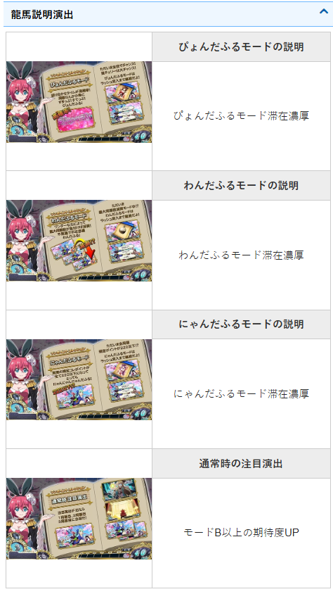
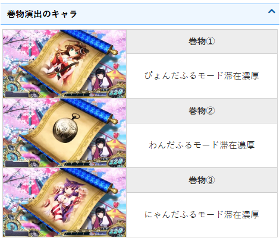
ATシナリオ
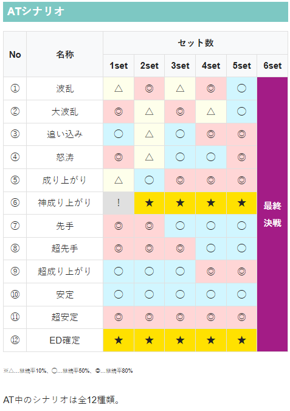
参考元
かめとうさぎのパチスロブログ